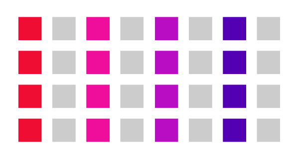
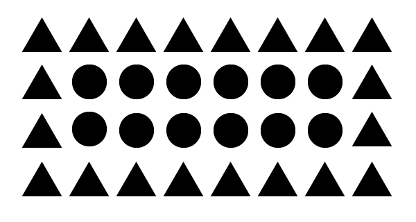
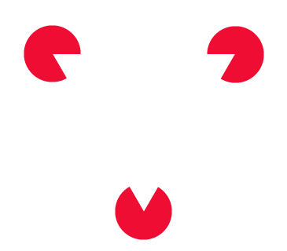
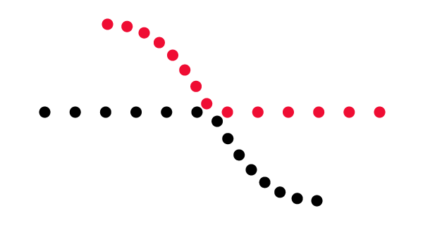
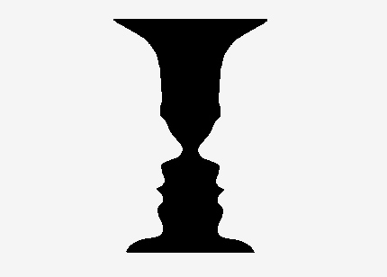

Udover farver og typografi, så er det også vigtigt at have et øje for det “usynlige” i design. Der findes nogle forskellige designprincipper, som gør et design til et godt design, hvis designprincipperne overholdes på den rigtige måde. Disse principper kalder vi for gestaltlovene. Som tidligere sagt er gestaltlovene en række designprincipper som er god til at benytte indenfor interaktionsdesign. Lovene bliver brugt på den måde, hvordan vores hjerner danner former og figurer og prøver at danne et helhedsbillede. De grundlæggende love er fordelt på denne måde:
Denne lov går ud på at elementer der høre sammen skal placeres sammen. Her kan man nemt se hvad der er der høre sammen.


Loven om lighed bliver brugt på den måde at man når man ofte ser objekter der ligner hinanden så vil man putte dem i kasser som et form af et mønster eller en gruppe. Dette vil blive brugt til at kunne skabe en sammenfatning af en illustration, billede osv. Som en serie af elementer der er separate. En regel omkring dette princip er at jo mere ensartet et element er, jo størrelse sandsynlighed vil man tro at de har en sammenhæng.
 Dette princip bruges til bruge øjets form for at kunne se lukkede former. Dette princip virker når man er et fuldkommen mønstre men vores hjerner virker på den måde at vi gerne vil have lukket dette mønstre som gør på denne måde at vores hjerne fylder den manglende visuelle information ud.
Dette princip fortæller os om hvordan at et design ikke må give en opfattelse af uorden da vi ville spilde vores tid på at lokalisere det manglede element fremfor det budskab vi har med vores design.
Dette princip fortæller om vores figure/ground hvor ‘figure’ er dette element som er intuitivt så vel som synligt, som er separeret fra baggrunden. ‘Figure’ derimod kan til tider være svært at adskille fra ground.
